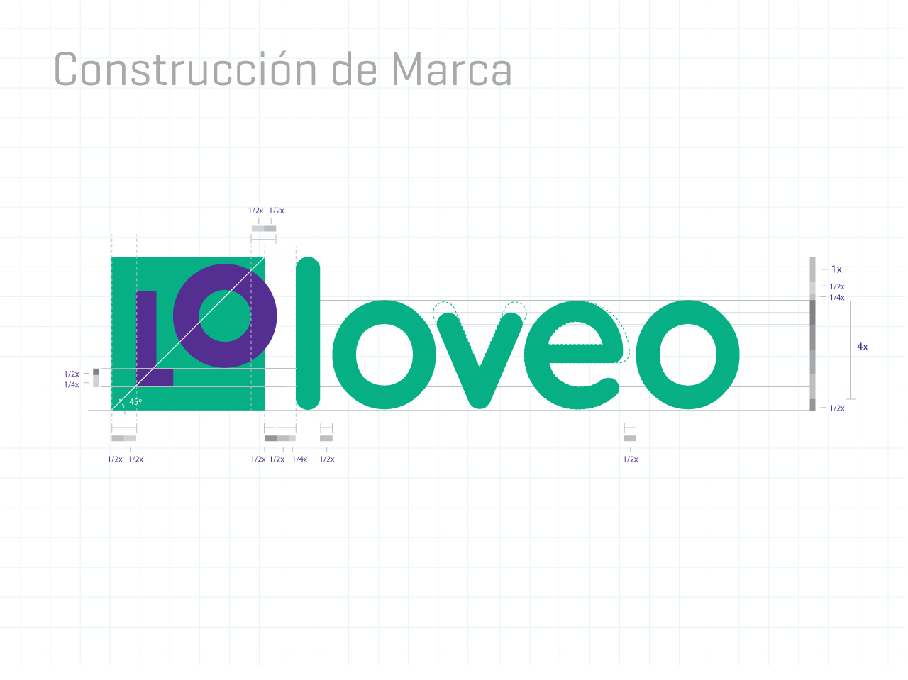
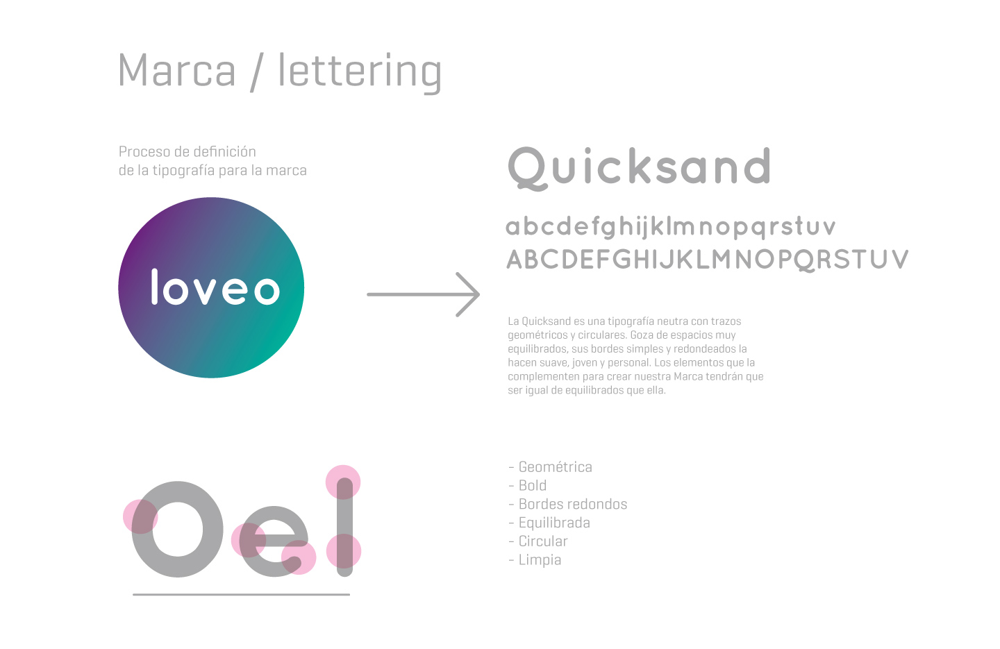
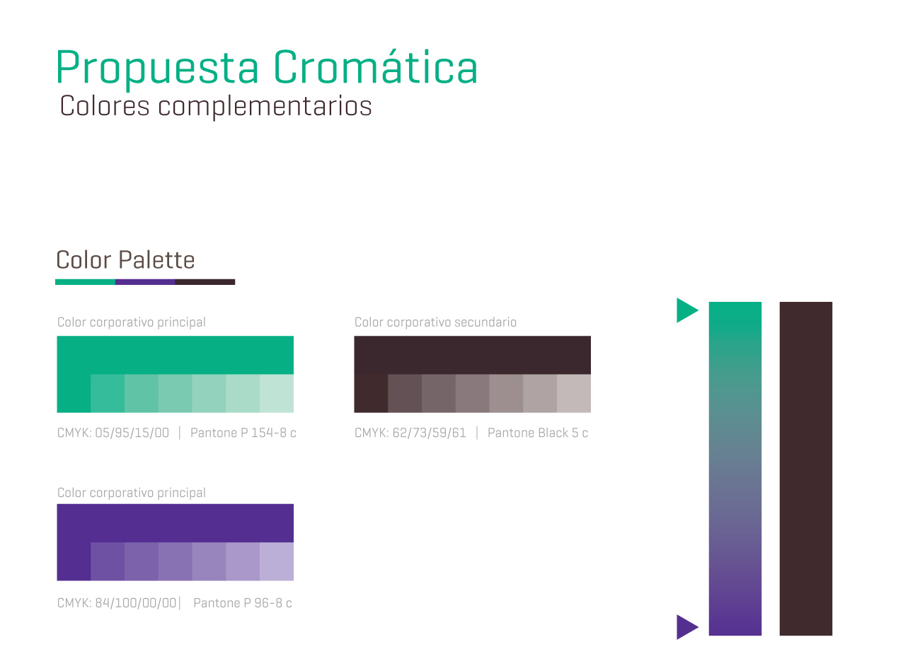

Brand Identity & Strategy
Óptica Loveo needed more than a facelift — they needed an identity that could carry genuine ambition. Operating in Asturias, Spain, they came to us with a clear goal: establish a new image that positions them as a modern, forward-thinking optic in a competitive market.
The challenge was to capture something rare: the intersection of clinical precision and approachable warmth. A brand that feels premium without feeling cold. Fresh without being trendy. Built to last, and built to own.
Our approach was a fresh trademark with a modern, geometric typeface — paired with a color system that communicates both trust and energy.
Each variant adapts to a specific surface and context — without ever losing its core geometry or brand recognition.
The LO monogram is the heart of the system. From the structured formality of Fancy to the energetic tilt of Casual — five expressions, one unmistakable identity.
Every element of the Loveo mark follows precise geometric rules. The LO container, the circular counter, the 45° diagonal cut — nothing is arbitrary. The construction grid ensures perfect reproduction at any scale.

Quicksand was chosen for its geometric, rounded character — clean, youthful, and balanced. The color system gives the brand both warmth and authority.




Every strong brand starts with a clear conversation. Book a free 30-minute discovery call — no pitch, no pressure.